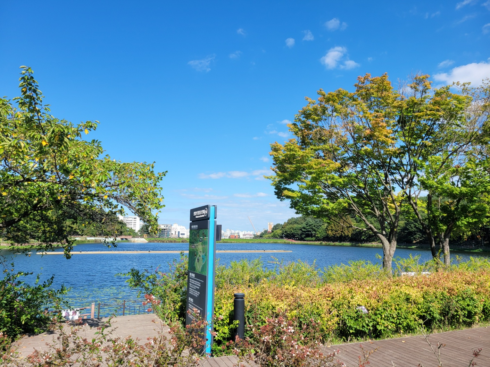

설봉호수 전경호수 · 산책
01설봉공원
설봉호수를 따라 걷고 주변 문화시설을 연결하는 2코스의 출발점입니다. 호수 풍경을 보며 천천히 걷다가 관심 있는 박물관·미술관이나 체험공간을 골라 들어가는 방식이 잘 맞습니다.
- 대표 경험
호수 둘레 산책과 공원 풍경 - 권장 체류
산책만 약 60~90분 · 문화시설 포함 시 2시간 이상 - 코스 접근
이천역 또는 터미널에서 택시 약 6분·2.5km 기준 - 준비
편한 신발과 계절에 맞는 햇빛·우천 대비
동선 팁
모든 시설을 다 보기보다 산책과 실내 관람 비중을 정한 뒤 2~3곳만 선택하면 일정이 여유롭습니다.
모든 시설을 다 보기보다 산책과 실내 관람 비중을 정한 뒤 2~3곳만 선택하면 일정이 여유롭습니다.